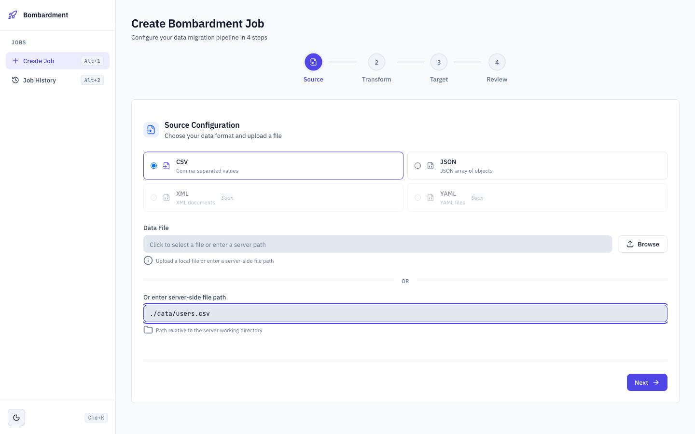
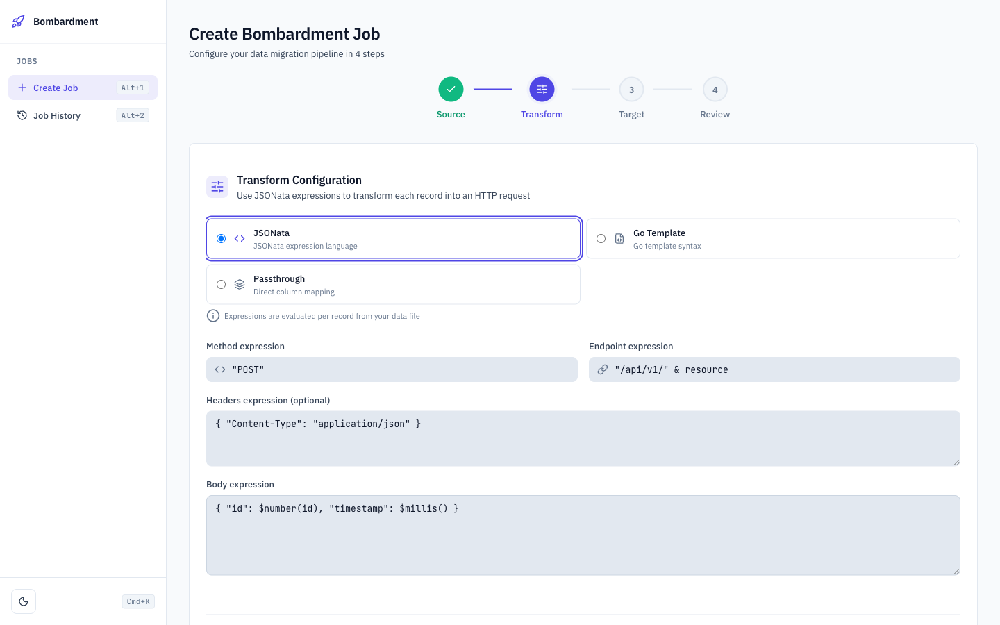
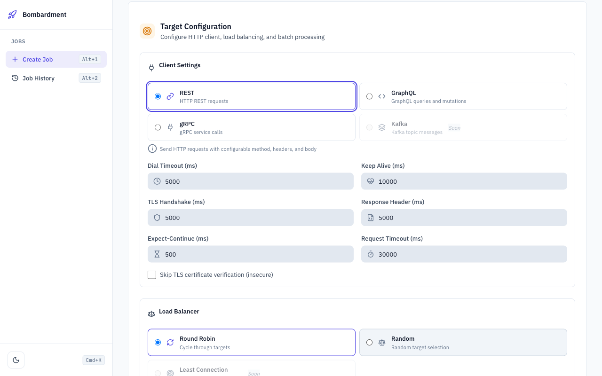
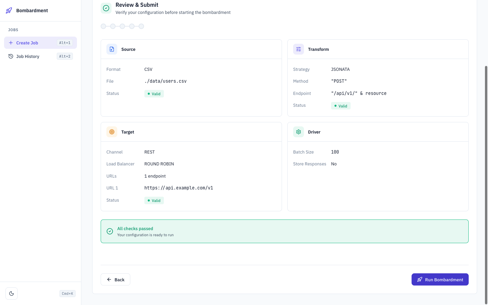
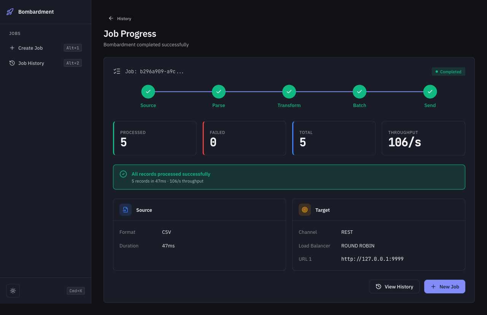

Stop writing
throwaway scripts.
Stream, transform, and dispatch millions of API requests from local files.
How Bombardment works
A modular pipeline you can extend
Configure Source
Choose your data format and point to the file.
CSV, JSON, Excel, ParquetDefine Transforms
Reshape each record into an HTTP request.
JSONata, GoTemplate, PassthroughConfigure Target
Set up endpoints with load balancing across targets.
REST, gRPC, GraphQLExecute
Run batched jobs with concurrent goroutines.
Progress tracking, error handling- Process millions of records in parallel
- Spread traffic across endpoints automatically
- Handle any file size without running out of memory
- Failures retry, not fail silently
- Know exactly where every job stands
- Write once, reuse for every migration
Get started
Install and start migrating in minutes
git clone https://github.com/Dhi13man/bombardment-runner.git && cd bombardment-runner && docker compose up --build
Choose your data format (CSV, JSON, Excel, Parquet) and upload a file or enter a server-side path.

Define JSONata expressions to shape each record into an HTTP request: method, endpoint, headers, and body.

Configure HTTP client settings, load balancing strategy, target URLs, and batch processing options.

Review your full configuration with validation checks before launching the bombardment.

Real-time pipeline visualization with processed/failed counters and throughput metrics.
--parser_context '{
"file_path": "./data/users.csv",
"strategy": "CSV"
}'--transformation_context '{
"strategy": "JSONATA",
"method_expression": "\"POST\"",
"endpoint_expression": "\"/api/v1/users\"",
"body_expression": "{ \"id\": $number(id) }"
}'--load_balancer '{
"strategy": "ROUND_ROBIN",
"urls": [
"https://api.example.com",
"https://api-backup.example.com"
]
}'--client_context '{"channel": "REST"}'
--data_context '{"batch_size": 100}'bombardment cli \
--parser_context '...' \
--transformation_context '...' \
--load_balancer '...' \
--client_context '...' \
--data_context '...'Built for real migrations
Everything you need to transform and bombard
Concurrent Processing
Batched jobs processed in parallel goroutines for high throughput.
Flexible Channels
REST, gRPC, and GraphQL out of the box.
Load Balancing
Client-side Round Robin and Random strategies across targets.
Transformation Rules
JSONata and Go Template expressions to reshape every record.
Streaming Parsers
CSV, JSON, Excel, Parquet via Go channels. Never loads the full file.
Job Management
Track, monitor, and control migration jobs through a state machine.
The right tool for the right job
Understanding when to use Bombardment
Application Layer Migrations
Bombardment excels at:
- Bulk data transfers via API endpoints
- Service-to-service record migrations
- Multi-target load-balanced dispatching
- Data transformation before submission
- High-throughput concurrent processing
Database Layer Migrations
Better handled by:
- SQL-based ETL pipelines
- Database-native migration utilities
- Schema versioning frameworks
- Direct connection replication tools
- Change data capture (CDC) systems